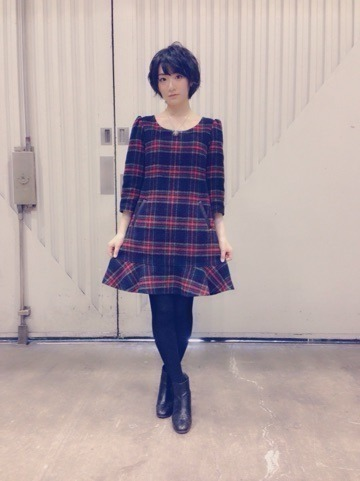
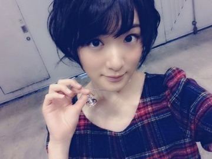

| 2015/01 21 Wed | 二桁。 |
まずは遅くなりましたが、
1月18日に行われた横浜個別握手会に来てくださった皆さんありがとうございました

2015年一発目の握手会でした！！
来てくださる皆さんはいつもこんな漫画の話ばっかりで、
ポジティブな事を言ってくださるのに、生駒はネガティブな事を言ってしまう、、
なのにしっかり向き合ってくれるのは本当に有難いです。
なんかアイドルなのに可愛い対応とか出来ないけれど、
いつも応援ありがとうございますという気持ちを私は握手会で皆さんに伝えたいなと思います。
いつも応援ありがとうございますという気持ちを私は握手会で皆さんに伝えたいなと思います。
本当、。
可愛い対応出来なくてごめんね〜(；д；)
テレビとかLIVEとかとテンション違うけど、
どちらかというと握手会の時はいつもの生駒ちゃんなんです。
テンション低い訳じゃないのよ〜
把握よろしくです


お洋服はMILKです

買っちゃいましたヴィヴィアン

次の握手会はコスプレ祭りかも〜ヽ(・∀・)ノ
では11thのシングル選抜発表について！
選抜は18人になりました！
私は二列目の真ん中、
別名センターの後ろTVでいい感じに見切れるポジションです！！
10福神です。
とても有難いと同時に失敗や乃木坂46に絶対にマイナスをもたらしてはいけないポジションでもあります。
11枚目はある意味乃木坂46の第2章の始まりのシングル。
第2章のファーストシングルだと思います。
今までの経験を生かしてこの2015年一発目のシングルで乃木坂の勢いも決まると思います！！
だから必ず掴みに行きます！
これをヒットさせる！！
選抜、アンダー、研究生
人それぞれ、ポジションで、日々のお仕事の中で、プライベートで、
嬉しい事だけじゃない、悔しくて悔しくて、努力が報われなくて、
自分は今何をすればいいの⁈
そう思う毎日、そう思う一年。
そんな気持ちに私もなります、みんなもあると思うし、
きっとスタッフさんも乃木坂を作っていく上で沢山悩んで私たちにいろんなチャンスを持って来てくださっています。
悩みは付き物。
生きているからね。
でもこれからはそこで立ち止まっていてはダメなんです。
厳しいようですが、
そこで止まってる場合ではないんです。
苦しくてもプロとして笑顔で、一つの作品を最高のものにする。
その最高のものが見てくださった方に伝わって、乃木坂が広まっていくと思います。
これからは、がむしゃらに全力で！
ではなく。
一つ一つもっと丁寧に、皆んなで作って行きたいなと思います。
プロとして力をつけてのデビューではなかったけど、
それは言い訳にしかなりません。
プロとして、自覚をもって、皆さんに乃木坂46を見せて行きたいと思います！！
私も頑張らなければ！！
越えるべき壁は遥かに高く分厚くて
見ていると自分の無能さを感じて、目をそらしたくなる。
でもやっぱりあの壁の向こうにある綺麗な景色が見たいから、、
まずは越える事を私は目標に行きたいと思います！！
応援よろしくお願いします！！
生駒里奈
コメント(1077)
2015/01/21 13:00